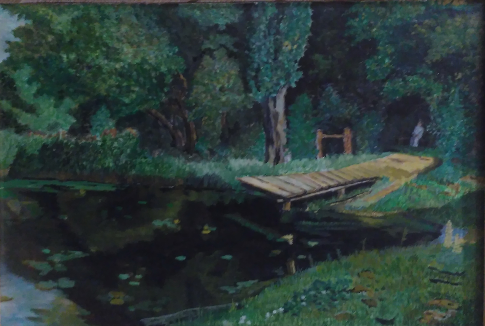

Белая нимфа — под вербой печальной Смотрит в заросший кувшинками пруд. Слышишь? Повеяло музыкой дальной… Это фиалки цветут. Вечер подходит. Ещё ароматней Будет дышать молодая трава. Веришь?… Но трепет молчанья понятней, Там, где бессильны слова. Мирра Александровна Лохвицкая